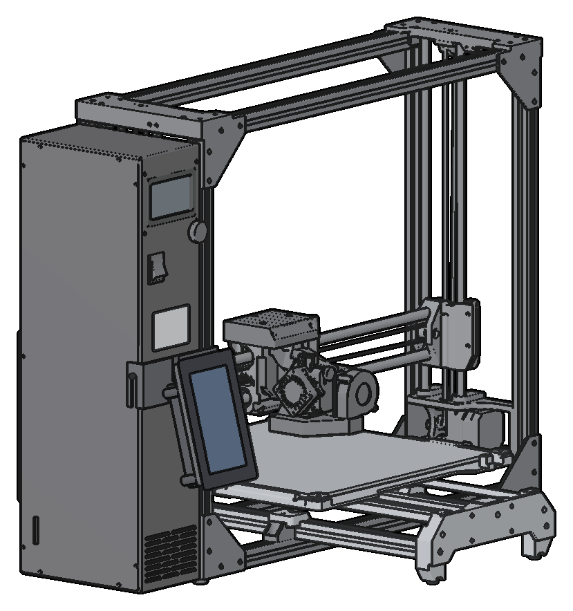
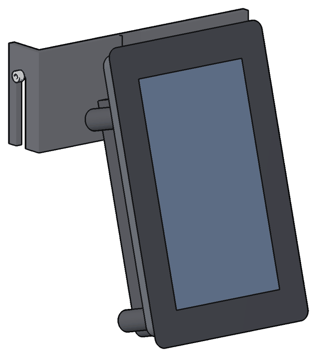
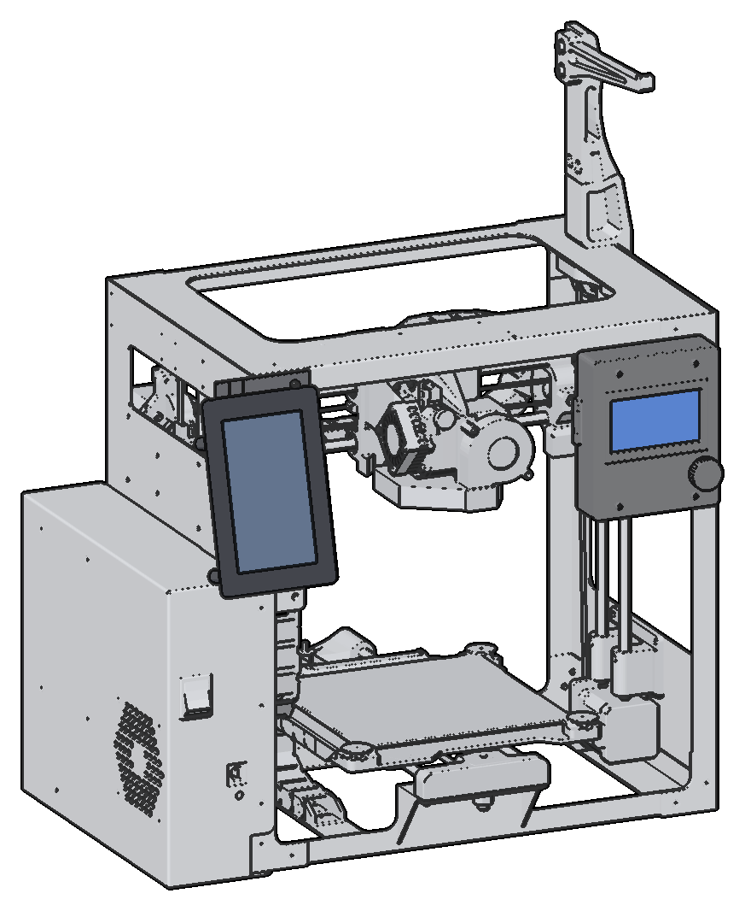

Hardware
The pod
A Raspberry Pi Touch Display 2 with a Raspberry Pi 5 on its back, in a printed case, on a bracket for the Mini 2 or the TAZ Workhorse.

The LulzBot Printdeck is a touch screen for the LulzBot Mini 2 and the LulzBot TAZ Workhorse. The hardware is the pod: a Raspberry Pi Touch Display 2 (5 inch), mounted tall, with a Raspberry Pi 5 on its back, in a printed case. A printed bracket holds the pod on the printer. Each printer has its own bracket, and the pod is the same on the two printers.
stl/pod/README.md has the print files, the print settings, the hardware of the pod and the webcam option. pod.py is the model of the pod and the two brackets.
The pod

The glass of the display is the front of the pod. The glass is wider than the case, so the case is a smaller body behind the glass. The display hangs with its ribbon end down. The Pi 5 with its Active Cooler is on the four standoffs of the display, with the USB ports up.
The case has three printed parts. Each part prints flat with no supports.
- The frame is the thin part around the display. Four M2.5 x 4 screws from the box of the display hold it to the four raised tabs of the display.
- The body is the deep part around the Pi. Four M3 x 6 screws go from the back of the body into heat-set inserts in the frame.
- The mount is a plate with a dovetail. Two M3 x 6 screws from inside the body hold it to the back of the body.
The ports of the Pi are flush with the walls of the body. The USB-C power port and the two micro HDMI ports are in the left wall. The USB-A and Ethernet ports are in the top wall. The printer cable plugs into a USB port of the Pi from above.
The bracket of each printer has a wedge. The pod leans back 15 degrees on the wedge. A key on the back of the wedge slides down into a groove in the bracket. The dovetail of the mount drops into a slot in the wedge from above. To remove the pod, lift it off the dovetail and pull it forward.
On the TAZ Workhorse
The pod is at the front left of the printer, on the front of the electronics chassis, below the TAZ Workhorse logo. You drill no hole in the printer.
- The TAZ bracket stands on two printed rail clips (
stl/clip.stl) in the front slot of the rail. Print each clip on its end, with a brim. - An M3 x 8 screw holds each rail clip to a metal M3 roll-in T-nut for 2020 extrusion in the slot.
- A nub at the top of the bracket goes over the edge of the side cover. The upper front screw of the cover holds the nub.
- The printer cable goes to the USB-B port on the rear face of the chassis. The power cable goes along the lower edge of the side cover. Five single cable clips hold the two cables on the side cover, on squares of foam tape.
On the Mini 2

The pod is at the top of the left upright, over the electronics case. The stock LCD of the Mini 2 stays on the right upright.
- The Mini 2 bracket is a plate on the front of the left upright. The two frame screws of the top corner hold it. Take out each screw, and put a longer screw in the same hole (M3 x 10 in the model).
- Two zip-tie anchors on the plate, at the right of the pod, hold the printer cable.
- The printer cable goes to the USB-B port in the front of the electronics case. Two double cable clips hold the power and printer cables side by side on the front of the electronics case.
What you need
- A Raspberry Pi Touch Display 2, 5 inch. Its box has the DSI ribbon, the power wire and the M2.5 screws.
- A Raspberry Pi 5 with the Raspberry Pi Active Cooler.
- An SD card for Printdeck OS. See Install.
- The Raspberry Pi 27 W USB-C power supply.
- A USB cable from USB-A to USB-B, from the Pi to the printer.
- The printed parts and the hardware in stl/pod/README.md. For the TAZ Workhorse, also two rail clips (
stl/clip.stl), two M3 x 8 screws and two M3 roll-in T-nuts.
Software
The display hangs with its ribbon end down, so the deck turns the picture 180 degrees. Set the turn on the Settings page of the deck, or with display_rotate=180 in printdeck.txt. The deck uses its tall layout on the pod. The manual shows the tall screens.
The print files
The FDM files, in their print orientation. The print page has the settings, the resin files and the hardware of the pod.
cable-clip-double_fdm.stlcable-clip-single_fdm.stlcamera-arm-mini2_fdm.stlcamera-arm-taz_fdm.stlcamera-clamp-mini2_fdm.stlcamera-clamp-taz_fdm.stlfit_holes_fdm.stlpod-body_fdm.stlpod-bracket-mini2_fdm.stlpod-bracket-taz_fdm.stlpod-frame_fdm.stlpod-mount_fdm.stlpod-wedge_fdm.stlclip.stl (TAZ Workhorse)
The design
The pod is a build123d model in lulzbot/, on the CAD of the printers from LulzBot.
Files
pod.pyis the model of the pod, the two brackets and the wedge, in build123d. It checks that no two parts overlap.pod.py exportwrites the print files.pod.py overhangschecks the print files for faces that need supports.fit_holes.pywrites a fit test for the display holes of the frame (stl/pod/fdm/fit_holes_fdm.stl).clips.pyhas the cable clips.camera.pyhas the webcam mounts.camera_models.pyhas placeholder models of other cameras, for the layout only.cable_physics.pygives the shapes of the cables in the 3D window of the model.live.pyandviewer.pyshow the model in a 3D window while it changes.workhorse.pyreads the CAD of the TAZ Workhorse.parts.pyandshape.pyhave the rail clip and the sizes of the rail.
The other scripts in this folder are for an earlier mount with a 7 inch display.
Reference files
ref/ has the files that the models use, with their sources:
ref/lulzbot/: LulzBot TAZ Workhorse v1.0.2 production files, from https://download.lulzbot.com/TAZ/TAZ_WE/v1.0.2/. License: GPLv3 or later and CC BY-SA 4.0 (COPYING,LICENSE-CC,LICENSE-GPL).ref/raspberrypi/: the product brief of the Raspberry Pi 27 W USB-C power supply.
Needs
uv (build123d, trimesh, pyrender), and an OpenGL driver with EGL for the renders.